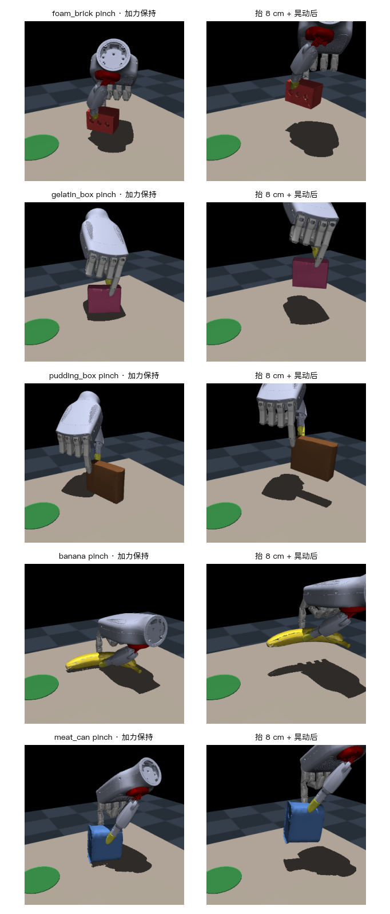
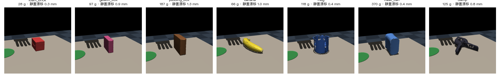
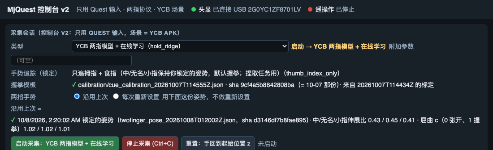

Stage 1.1 结果：数采质量
Quest 手指翻转的测量、速度门控、Mac 相机仲裁（比值 Kalman）、重定向偏差核查与未解决的问题
collection v2（计划页 v3）的正式采集在 2026-09-16 傍晚被同一个问题两次打断：做 tripod 时机器人手指来回跳。这一页记录接下来四天对采集输入侧的测量与修正——每个数字都来自 human_machine_interaction · hand_control/data/quest_sessions/ 里的原始 session，协议改动记为计划页 v4。95 条 pinch 的训练结果仍在 Stage 1.2 结果页；本页不含任何模型数字。
| 版本 | 日期 | 变了什么 | 原因／证据 | 结果／记录 | 截图／视频 |
|---|---|---|---|---|---|
| v4 | 2026-09-16 → 09-20 | v3 协议不变，采集输入侧加两级：每指速度门控（--finger-gate on）；Mac 相机 + MediaPipe 的仲裁（--cam-udp，伸展比 Kalman，按视角选 3-D／2-D 线索）。网页控制台一键启动采集／相机／APK。target_ctrl（Stage 1.2 的模型输入）自此是门控后的命令，source 行保持原始。 | Quest 在遮挡的卷曲手指上整块切换假设，每指 3–24 次/min，置信位全程为高（§1） | §2 门控 ~40% 翻转不到机器人；§3 相机仲裁；§4 09-20 在环 session 的失败与修正 | 翻转图 · 配对图 · 在环图 |
| v5 | 2026-09-23（离线） | 抓取协议不变；视角标定改为定时模式（每手势 5 s 准备 + 10 s 自由转手保持，4 手势 60 s，去掉角度格显示），头显 APK 新增 passthrough 相机视频通道（1280×960、20 fps、每帧带相机位姿与内参），Mac 上第二路 MediaPipe 记为 cam_source camera="quest"；实测 20 fps 时头显渲染仍 90 fps、物理步长 +20 µs。相机仲裁的 Kalman 噪声模型按录制数据重设：标定产物 v2 分开存白噪声 σ（做 R）与映射离散度 σ（进投票边界），Q 由 3 改为实测手指加速度中位数 5 ratio/s²，legacy 模式 R 0.06→0.025；latest.json 由 225005Z 重建。共享的 hindsight 标注器；因果翻转特征可行性脚本。 | v1 产物把 bin 内离散度（白噪声的 2–8 倍、系统性的视角依赖）当 R 喂给滤波器，滤波器变慢而偏差不减；Q=3 跟不上 p99 卷曲、只靠"3 帧野值重启"（§3 末） | 八个相机 session 回放：标定模式误 hold 17.7→11.5 s、拦下的翻转 3→6/89，legacy 12→12/89、18.8→17.1 s；拦下无一行减少，误 hold 16 行里 4 行增 0.1–0.6 s；尚未上机。因果规则可行性：AUC 0.34–0.53，否定（§7） | — |
| v6 | 2026-09-23 晚（离线） | 抓取协议不变；头显相机改用右目 1280×1280（手在画面中下部，投影手腕落在画面内 92%）；标定产物 v3 存操作者的张开/握拳模板；仲裁器加了一条"稳态纠正"路径（相机与 Quest 持续分歧即纠正、不等跳变；相机证据在时 hold 不按时钟放手；无 hold 可守时按模板把手指合成到相机估计）——回放否定，默认关闭（CameraArbiterConfig.steady_correction）；视角标定新增持物手势集（open + 圆柱满握 + 小物 tripod + 卡片 pinch + 球握，5 × 15 s = 75 s，控制台「视角校准·持物」）；回放脚本 --camera=quest。 | 163428Z：tripod 的无名指/小指被 Quest 从 hold 第一帧起二值化成伸直（0.82 vs 双相机 0.65），错段 1.2–1.7 s、只在手背朝头显时；现有仲裁两路相机几乎无动作（每指 ≤1.0 s）。像素投票：对完全翻转逐帧 98–100% 可辨，对半弯无判断；小指底噪 p95 92–109 px 不过"1/3 间距"判据。 | 稳态纠正回放：八个抓取 session 每 session 纠正 1.7–28.6 指·秒（占空比 5–15%，指尖位移 3–10 cm），其中 25–95% 是把 Quest 读作卷曲的手指"掰开"（MediaPipe 在物体后盲区的先验），仅 0–10% 落在标注翻转内；203316Z 真实过渡滞后 p90 471→785 ms；真值 session 里握拳被误张开 0.5–0.9 s/指、tripod 无名指纹丝不动。判据不过，关闭；hold 上限是对相机系统误差代价的封顶，不是占位符（§3 v6） | — |
| v7 | 2026-10-04 → 10-07（离线） | 抓取协议不变，没有新的采集。追踪路线定论：v5／v6 之后的审计与恒定基准、"谁对谁错"、路线调研（含 DexYCB 多视角 MediaPipe 实测），以及四项事先注册的离线测试——学习式翻转检测、先分类再回归、抓取 session 里的 Mac 相机复查、头显几何遮挡预测——外加位姿门控纠正（HMI 预设 v7_pose_gate）的回放。结论：只靠 Quest 数据流或现位置的 Mac 相机修不了中／无名／小指翻转；成熟路径是手指传感戴在手上、头显只管手腕；相机仲裁降级为有天花板的实验；落地见 v10（控制台 v2 与两指协议）。 | 用户 10-04 → 10-07 连续四问：卡尔曼滤波优化到哪了、能否用模型辅助预测、能否手势分类再回归、为什么对侧的 Mac 相机看不到卷曲。 | §10：学习式检测按 session 留一 AUC 0.61 < 0.70；分类再回归比"保持上一刻"差 6.9 点（类别固定后仍差 1.3 点）；Quest 翻错的 17 次里 Mac 只 4 次读成卷曲；头显几何遮挡预测翻转 AUC 0.40；多视角 MediaPipe 纠正 57 %／误改 19 %，未过判定线 | AUC 汇总图 |
| v8 | 2026-10-07 | 数采场景换 YCB 子集（Mac 上的资产与验证，头显同步在之后）：objects4 的四个 body 不动，追加 10 个 YCB body（CoACD 凸分解碰撞件、视觉网格、YCB 表质量的 inertial、静止姿态烘进网格、记包围盒的零碰撞 geom）+ 抓姿库接触候选；因手势追踪只有拇指、食指可靠，只验两指捏取；三轮验证（日常摆法 → 薄盒立放、杯沿、加午餐肉罐与夹钳 → 两指 IK 先验）。 | 用户：换成有 digital twin 的 benchmark 物体，先在 Mac 做好给用户看；因硬件限制只做两指抓取，物体必须在限制之内。 | §9：真实质量下 10 件里 4 件可捏（泡沫砖、香蕉、立放的明胶盒与布丁盒），午餐肉罐边缘，马克杯、夹钳、马克笔、金枪鱼罐、剪刀不可；工作规则：2–5.5 cm 宽的竖直可捏面、离桌面 ≥ 2.5 cm | 捏取画廊 · 静置一排 |
| v9 | 2026-10-08 | 头显同步到 YCB 场景：APK 换 objects_ycb-20261007；物体尺寸与静止高度取包围盒 geom；新字段 task_max_on_table（每次目标 + N−1 件上桌，其余与非任务 body 停在桌外地上）；遥测每件带 extent／on_table；对齐验收脚本 scene_alignment_check.py。 | 用户 10-08：「头显资产更换，换号之后我去尝试」；6 件 YCB 尺寸的物体在 0.6 m 模型桌上从来摆不下（0/200），目标 + 2 件 100 %。 | §11：Unity 原生自检 PASS 1693；三场真实 session 对齐（手碰翻的两次除外）：高度 ≤ 0.9 mm、尺寸 ≤ 0.05 mm、停放全在桌下，布丁盒／明胶盒静止后倾 1.7°／1.1°（系统性）；两次翻倒是手碰的；第一次启动（00:37）死在排程只认四个基元，修复者 = 协调 session，补 --check-args 与整链检查 | 待补 |
| v10 | 2026-10-08 | 控制台 v2 + 两指协议：只用 Quest 输入，手势追踪锁定为 thumb_index_only（中／无名／小指保持固定姿势）；保持姿势「沿用上次」或「每次重新设置」（掌心朝头显保持 3 s 锁定，半卷 c ∈ [0.5, 0.9] 不锁，30 s 超时沿用上次）；会话开头先锁三指、后定高度。 | v7 定论（视觉补救全部未过线）；用户 10-08 三条原话（见 §12）；半卷风险的运动学检查。 | §12：两场实测约 11 s 一次锁定、c ≈ 1；旧顺序机器人翻转，新顺序 10 / 10 成功；用户验收 | 图 |
§ 1问题的测量：Quest 在遮挡手指上切换假设
操作者感受是"tripod 时手势来回抽搐"。在 source 行（腕坐标 21 点，90 Hz）里它长这样：被手掌挡住的卷曲手指——中指、无名指、小指——在一帧内从完全卷曲（指尖离腕 ≈65 mm）跳到完全伸直（≈175 mm）再跳回，手腕几乎不动（<0.1 m/s）。单帧指尖步长中位数 28 mm／11 ms（2.5 m/s），最大 110 mm；同批数据里真实指尖速度 p99.9 = 1.2 m/s、最大 1.8 m/s。三根手指整块一起翻——追踪器的先验把它们绑在一起，所以 tripod 需要的"中指半屈、无名/小指卷曲"这个状态它根本不输出。

| 测量（2026-09-13 → 09-16，44 min 有效追踪） | 数值 | 含义 |
|---|---|---|
| 手指跳变率（>1.5 m/s，每指） | pinch 17–24／min，tripod 4–9／min，power ~17／min | pinch 更高（三指卷曲被挡）；tripod 感觉更糟是因为中指承重 |
| 翻转后回到原状态的时间 | ≤100 ms 33%，≤300 ms ~50%，其余 0.5–2 s 或不回 | 定时类滤波最多去掉一半 |
| Quest 每指置信位为高的帧 | 99–100%，翻转期间不变 | 已有的 --finger-confidence hold 看不见它 |
| 掌法向·(头→手) 与跳变率 | −1..−0.75 区 44/min → +0.25..+0.5 区 9/min | 几何遮挡是主因；接近方向 front/left/right/top 无差别 |
| 被猜的手指是否"冻结" | 否（0.3 s 窗内 <0.5 mm 的帧 0%） | "静止=猜测"不能用作判据 |
§ 2速度门控（finger jump gate）
代码 human_machine_interaction · hand_control/services/level_2_landmark_filters/finger_jump_gate.py，8 项单元检查。每指、在腕坐标 landmark 上：帧间位移 ≤ 1.5 m/s·dt（静止手指另加匀速预测偏差 ≤ 80 m/s²·dt²）→ 连续、零延迟直通；否则 hold 上一被接受姿态，跳变持续 150 ms 后接受，接受后以 1.5 m/s slew 而非瞬移；流中断 >0.1 s 重置。
| 离线回放（10 个 session，44.8 min） | speed 1.5 + acc 80，confirm 150 ms（默认） | confirm 250 ms | speed 0.8 |
|---|---|---|---|
| 跳变起点／min | 8.6 | 8.5 | 19.7 |
| 在 hold 内自己弹回（完全不到机器人） | 39% | 52% | 28% |
| 被 hold 的帧 | 2.0% | 2.8% | 4.2% |
| hold 时长 p50／p95 | 158／~300 ms | 256／~2400 ms | 170／~1700 ms |
它能做的：瞬移变成有界慢滑，约四成翻转消失。它不能做的：判定持续超过 confirm 的错误状态——流里没有信号。09-17 第一次开门控的 session（113607Z，tripod 31 次/min）证实：90% 的翻转是持续型，门控只 hold 了 1–2% 的帧。
§ 3Mac 相机仲裁：第二视角 + 伸展比 Kalman
头显摄像头抓取时永远看手背；第二台从前下方看的相机（MacBook 自带，1280×720 30 fps，MediaPipe 0.10.21，独立 conda 环境 mp_cam——mediapipe 要求 numpy<2，不允许进采集环境）能看到卷曲。相机服务 hand_control/demo/cam_hand_stream.py：标签只用来首次锁定右手（MediaPipe 的左右标签有 17% 的帧翻转），之后按手腕位置逐帧跟踪；UDP 发给采集端，记为 cam_source 原始行。

| 配对分析（115223Z） | 数值 | 结论 |
|---|---|---|
| 相机拍摄→采集端延迟；两路时钟偏差 | 25 ms（p95 34）；≈ −10 ms | 同一台 Mac 的单调时钟，不需要跨设备对时 |
| 手性（Umeyama 全 21 点残差，原样 vs x 取反） | 26 mm vs 63 mm | 不镜像 |
| MediaPipe 近节指骨长度 vs Quest | 22 mm vs 38 mm，且同 session 内在 10–30 mm 漂 | landmark 级融合不成立：它的 3-D 手不是刚体骨架 |
| 伸展比一致性（卷 <0.65／伸 >0.8 同侧判定，M/R/L） | 掌心朝相机：3-D 71–78%、2-D 34–75%；手背/侧面：2-D 85–92%、3-D 49–85% | 线索要按视角选（§4） |
仲裁器 level_2_landmark_filters/camera_arbiter.py（13 项检查）：每指一个常速度 Kalman 滤相机的伸展比（野值门 4σ、连续 3 帧野值即真实阶跃重启、对 Quest 的偏差取滑动中位数校正）。相机只在 Quest 发生跳变时投票（门控的 jump，或 150 ms 内伸展比变化 ≥0.2）：相机站在跳变前一侧 → 新状态被否决、hold 旧姿态，直到 Quest 回来／相机转而同意／0.6 s 上限；相机站在跳变一侧 → 门控正在 hold 的跳变立刻放行；相机不新鲜（>0.25 s）或看不见 → 只剩门控。离线回放 115223Z：9 次否决，两次明确的 Quest 翻转（中指 26–29 s、34–35 s）被压住；一次真实卷曲（20.0 s）因相机恰好丢手被延迟 0.9 s——上限由此设定。
v5（2026-09-23，离线）：Kalman 的 R、Q 与投票边界按录制数据重设
问题：滤波器要不要按 Quest 的误差和 MediaPipe 的误差调，数据里有没有这些误差？答案分三层。Quest 不进 Kalman——它是被投票的对象。持握手势里 Quest 伸展比的逐帧噪声 ≤ 0.0012、持握内离散 0.001–0.003（张开）／0.02–0.05（握拳，是人手自身漂移），|Δ|>0.1 的帧 0.00%，两次标定 60 s 的张开+握拳里速度门控 0 次跳变：它的误差不是方差而是 §1 的双峰切换，数据里唯一能描述它的是按视角格的翻转风险图（36 格里 13 格有 ≥20 s 卷曲数据，18 min 有效，覆盖格上 4.8 次/卷曲分钟，最差格 12.9）。MediaPipe 的误差有两部分，v1 标定产物把它们混成一个 σ 当 R：
| 每线索 × palm_z bin × 手指（M/R/L），225005Z 工作空间标定 | 3-D 世界比值 | 2-D 图像比值 |
|---|---|---|
| 白噪声：相邻帧差的 MAD／√2（滤波器的 R） | 0.010–0.022 | 0.014–0.037 |
| bin 内离散：持握帧的 MAD（v1 当作 R 的量） | 0.042–0.084 | 0.068–0.277 |
| 映射离散：（线索 − 同时刻 Quest）在 bin 与持握内的 MAD（系统性） | 0.040–0.088 | 0.072–0.259 |
| 野值：|相邻帧差| > 0.2 | 0.2–0.3% 帧对 | 1.2–3.7% |
| 张开 − 握拳 分离度 | 0.23–0.56（向手背视角递减） | −0.22..0.50（斜掌心盲） |
bin 内离散是白噪声的 2–8 倍（214938Z：2–15 倍），多出来的不是噪声，是 0.25 宽的 palm_z bin 里残留的视角依赖加 MediaPipe 非刚体的手——系统性偏移，Kalman 平均不掉；把它当 R 只让滤波器变慢（09-20 §10 的诊断）。相机时序：dt 中位 33.3 ms、p95 38–39 ms、每 session 9–17 次 >100 ms 空档，94–96% 帧能在 40 ms 内配上一帧 Quest。
改动（cue_calibration.py 产物 v2，v1 文件仍可加载）：sigma_white、sigma_map 与原 sigma 并存；R 取白噪声，投票边界 = max(0.35, 2σest, 2σmap)——某视角下曲线不确定的线索只在明显分歧时投票；legacy 模式 R 0.06→0.025；Q 由 3 改为 5 ratio/s²（标定模式按 Quest 每指张开−握拳分离度换成分数单位）。Q 的依据：三个抓取 session 73 499 对门控判定连续的 M/R/L 帧上，|d比值/dt| p50 0.07／p90 0.50／p99 2.73 每秒，|d²比值/dt²| p50 5／p90 29／p99 181 每秒²。合成核验（R 0.02、30 Hz、0.5 的卷曲）：Q=3 跟 p99 卷曲（0.2 s）峭差 0.198 且 3 帧野值→重启；Q=5 峭差 0.058、0 野值；Q=30 跟得更紧（0.019）但估计自身 σ 在 100 ms 相机空档后升到 0.178、250 ms 后 0.963——边界含 2σest，相机就不再投票（回放 115437Z：Q=3/5/10/30 拦下 3/2/2/1 of 8）。5 是真实手指加速度的中位数：由动力学设定、由回放核验、不是对八个标签拟合。
| 八个相机 session 回放（拦下的 hindsight 翻转／误 hold 秒；瞬移 0/min、真实过渡延迟不变） | 仅门控 | legacy 旧→新 | 标定模式 旧→新 |
|---|---|---|---|
| 0918-114841 | 0/1 · 0.0 | 0/1 · 3.1 → 0/1 · 2.9 | 0/1 · 2.9 → 0/1 · 2.2 |
| 0918-115223 | 0/2 · 0.0 | 0/2 · 3.5 → 0/2 · 3.8 | 0/2 · 4.1 → 0/2 · 1.5 |
| 0920-115437（上午机位，标定不可迁移） | 0/8 · 0.0 | 6/8 · 2.1 → 6/8 · 2.1 | 1/8 · 3.6 → 2/8 · 2.1 |
| 0920-202847 | 0/24 · 0.0 | 2/24 · 2.7 → 2/24 · 2.7 | 1/24 · 1.2 → 1/24 · 1.3 |
| 0920-203316 | 2/19 · 0.0 | 3/19 · 1.3 → 3/19 · 1.0 | 1/19 · 0.1 → 2/19 · 0.7 |
| 0920-211414 | 0/14 · 0.0 | 0/14 · 1.0 → 0/14 · 0.5 | 0/14 · 0.4 → 0/14 · 0.2 |
| 0920-212520 | 0/0 · 0.0 | 0/0 · 0.6 → 0/0 · 0.6 | 0/0 · 0.2 → 0/0 · 0.3 |
| 0920-223549（与标定同机位的 pilot） | 3/21 · 0.0 | 1/21 · 4.5 → 1/21 · 3.5 | 0/21 · 5.2 → 1/21 · 3.2 |
| 合计 | 5/89 · 0.0 | 12/89 · 18.8 → 12/89 · 17.1 s | 3/89 · 17.7 → 6/89 · 11.5 s |
起作用的是白噪声 R（单独它就把 115437Z 从 1/8 提到 4/8）；映射项与 Q=5 保住大部分收益并让边界如实反映视角。对照预定判据（拦下不减、误 hold 不增、延迟不变、瞬移 0）逐行看：拦下的翻转没有一行减少，标定模式三行增加（115437Z 1→2、203316Z 1→2、223549Z 0→1）；误 hold 在 16 行里 9 行减少 0.2–2.6 s、3 行不变、4 行增加 0.1–0.6 s（legacy 115223Z 3.5→3.8；标定 202847Z 1.2→1.3、212520Z 0.2→0.3、203316Z 0.1→0.7——后者同时多拦一个翻转）；≥200 ms 迟放的翻转 4 行减少、2 行增加（legacy 223549Z 2→3、标定 115437Z 0→1）。标签集很小（每 session 8–24 个翻转），这是净收益而非一致收益。上限仍是 09-20 复盘说的：同机位 pilot 里相机只有 22% 的帧看到手，所有仲裁变体拦下 0–1/21 而仅门控拦下 3/21——差额是相机确认了它看错的跳变，这条路径仍未核验。改动未上机；下次 session 的 --cam-calibration auto 会加载新产物（task_config 记新 sha）。复算：calib_kf_design.py、arbiter_replay_variants.py --ab --group=all；备忘 §14。
v6（2026-09-23 晚，离线）：第二次双相机 session、像素投票核查、稳态纠正试验（否定）
录制。163428Z（定时协议 60 s，Mac + 头显右目 1280×1280 + Quest）：头显 1242 帧有手（81%，20 fps，帧间隔 p50 49 ms、p95 78 ms），100% 与 20 ms 内的 Quest 帧配对（p50 2.4 ms）；投影手腕落在画面内 92%（上一场在右下缘）。Mac 1936 帧（82%）。tripod 段 hold 开始时手势就没匹配上：Quest 读无名指/小指 0.81/0.82，头显 3-D 0.57/0.64、Mac 0.69/0.70——操作者只弯了一半，Quest 从第一帧起把它们二值化成伸直，错段 1.2–1.7 s，只在手背朝头显（视角 +0.9）时出现；hindsight 标注器把正确的 0.54 段标成"翻转"，因为错误状态是多数。与 161500Z 的 36/34% 不可比；下次标定 tripod 必须把两指弯到底。
像素投票核查（hold 段、手掌在画面内）：(a) 坐标路径对——掌心五点的共同偏移中位 18 px、p95 43 px，手腕的 +28/+38 px 是关键点定义差异（MCP −15…−7 / −1…+9，指尖 −19…+6 / +2…+13），MRUK 的相机位姿取自帧捕获时刻，配对延迟扫描最优在 +40…+60 ms、值 2 px；(b) Quest 正确的 (hold, 手指) 对上的底噪按视角 bin：指尖 p50 18–51 px、p95 50–112 px，小指每个 bin 都 92–109 px，侧视 bin 最差；(c) 用操作者自己的张开/握拳模板投影得到的假设间距 102–232 px（全幅）、55–128 px（张开 vs 弯 40%）；p95 底噪／全幅间距：食指 0.31–0.52、中指 0.32–0.57、无名指 0.25–0.64、小指 0.55–1.02——预定判据（<1/3）只在正对/背对 bin 对食/中/无名指成立，小指、侧视从不成立；(d) 直接模拟投票（Quest 当前手指 vs 另一状态的模板，看 MediaPipe 离谁近）：Quest 正确的 hold 逐帧一致 94–100%（边距 0），边距 30 px 时误判 0%（4–25% 弃权）；完全翻转可辨 98–100%（握拳段反事实，含背视）；半弯的 tripod 无名指/小指：指尖 53/26% 判弯、链 23/8%，边距 30 时基本弃权。二值检验看不见半弯，这是它该给的答案，也说明它帮不上这一场的忙。
现有仲裁器在这一场：Mac（同场产物）每指拒绝 0.6/1.0/0.6 s，头显 0.4/0.3/0.5 s；tripod 的错段一动不动——边距内没有可投票的跳变，0.6 s 上限也短于错段。缺口在触发条件，于是做了"稳态纠正"：相机与 Quest 的持续分歧（连续 3 次相机更新超出边界）本身就触发；有 hold 可守则 hold 靠证据而非时钟持续；相机与两边都不同意时，用标定产物 v3 里操作者的张开/握拳模板把这根手指的骨段旋转到相机估计对应的伸展比（finger_chain_at_ratio），hold 到位交接。4 项新测试；回放变体 arb v3 hold / steady。
| 163428Z 真值对照（协议真值；tripod 无名指/小指 = 双相机 0.65） | 门控 | v5 仲裁 | v6 稳态纠正 |
|---|---|---|---|
| tripod 无名指 输出中位 / 错 >0.2 的秒数 | 0.81 / 3.4 | 0.81 / 3.3 | 0.82 / 3.5（纠正 0.3 s：误差 0.15 低于诚实边距 0.35–0.62） |
| tripod 小指 | 0.82 / 4.5 | 0.82 / 4.5 | 0.67 / 4.2（纠正 0.6 s） |
| 握拳 食/中/无名指 误张开秒数 | 0 / 0 / 0 | 0 / 0 / 0 | 0.8 / 0.7 / 0.5 |
| 八个抓取 session：每 session 纠正指·秒 · 次数 · 指尖位移 p50/max | — | — | 1.7–28.6 · 14–93 · 27–98 / 99–125 mm |
| 纠正方向：相机比 Quest"更张开"且 Quest 读数 <0.6 的占比 · 落在标注翻转内 | — | — | 25–95% · 0–10% |
| 拦下翻转 / 真实过渡滞后 p90 | — | 203316Z 2/19 · 471 ms；223549Z 1/21 | 3/19 · 785 ms；0/21 |
结论：判据不过，默认关闭。单目比值线索在 Quest 出错的视角（侧视、背视）映射离散度太大，纠不了半弯；在物体后面它自己也在编——把抓着东西的手指掰开。hold 上限因此不是"等证据"的占位，而是对相机系统误差代价的封顶：滤波器平不掉系统误差。头显重投影通道保留，作为跳变时的第二证据待测。重定向器对合成手指链：主屈曲关节单调，次级关节在半弯处抖 0.05–0.43 rad（小指外展 0.43）——若要启用需改成关节空间插值。
下一次录制：遮挡下的真值。持物保持：物体固定手势（恒定性仍是真值，连被物体挡到半弯的手指也是），并像真实抓取一样遮住手指。控制台「视角校准·持物」= --calib-gestures open,power,tripod_object,pinch_card,sphere，5 × 15 s；两路相机同录；按 hold × 手指对照真值评分。
§ 4第一次在环 session（09-20）：相机看手背时投错票，及修正

在环时的现象：比之前更抽、更不跟手。原始记录：相机 99% 帧新鲜、右手 98%、延迟 24 ms，但仲裁对 M/R/L 各否决了 ~315 帧（四段、每段最长 1 s）——否决的是操作者真实的卷曲。原因：整段顶抓里 Mac 相机看到的是手背/侧面（MediaPipe 掌法向 z 在 0..+0.5），此时 MediaPipe 的 3-D 提升和 Quest 一样在猜"伸直"。量化：手背朝相机时 M/R/L 分歧 0.37，掌心朝相机 0.05。
未定：28.8–32.5 s 那段 Quest 报"卷曲"3.5 s、相机 2-D 报"伸直"（图像中指长 2.4 个掌宽）——两路只能二选一，本页按图像证据视为 Quest 翻转；0.6 s 后它仍会通过。
§ 5重定向"伸直手指被弯"核查：不是偏差
操作者反馈"手指绷直，L20 仍弯"。115223Z 里人手指完全伸直（伸展比 >0.97）时的命令：食指 mcp_pitch 44°、中指 43°、无名 26°+pip 23°、小指 22°+pip 16°。实现并回放了 --target-mode skeleton_all（四指都用机器人骨长、沿人手骨方向）：MCP 41°→41°（食）、42°→40°（中）、23°→30°（无名）、19°→20°（小）；无名 PIP 23°→17°；捏合间隙 16.8→15.5 mm（拇-食）、17.3→15.3（拇-中）。几乎不变，因为人手指 PIP/DIP 绷直时 MCP 本身相对手掌轴弯着 50–70°（抓取准备的拱手），命令 41–45° 比人还少；真正平放（hold-flat 校准，1st percentile）读 6–13°、命令 5–27°。L20 是忠实复制掌指关节。默认保持 skeleton_abd；要更直只能做有意的保真取舍。
§ 6随之落地的工具
- 网页控制台（
hand_control/demo/demo_console.py，console_service.sh start常驻本次登录、不开机自启）：启动/停止采集（与终端同一 sh 脚本，Ctrl+C 语义）、门控与相机勾选、`z` 重置、构建+安装 APK、状态栏"头显（USB）→ 遥操作"、相机在线/右手率/延迟/仲裁计数。发现并修了 launchd PATH 缺/usr/sbin（mujoco 导入调 sysctl）与一处持锁记日志的死锁。 - 头显面板第三版：十指在板上的投影点（远/武装带/按压深度 + dwell 环），板面任意位置武装（旧版需正对按钮、从侧面来要先退开），Fingers 行加门控开关；Unity 编辑器检查 255 项通过，APK 于 09-17 构建安装。
- 离线报告
hand_control/demo/finger_flip_report.py：任一 session 的跳变统计与 raw/gated 叠图。 - 研究备忘：
hand_control/plan/2026-09-16-finger-flip-gate.md（本页数据来源）；hand_control/plan/2026-09-20-adaptive-retargeting-research.md（角度映射 vs 向量 IK、学习型/在线自适应重定向文献、因果手指先验设计与两周排序）。
§ 7未解决的与下一步
- 持物视角标定（09-23 晚新增，未录）：free-hand 标定给不出遮挡下的真值，稳态纠正的回放因此无法验证而被关闭；下一次录 75 s 的持物集，两路相机同录，先回放再上机。
- 持续型翻转（0.5–2 s）仍会在 confirm/上限后通过；顶抓时手掌朝下，没有任何相机看得见掌心，相机必须弃权。因果先验的可行性已测（09-23，
flip_feature_feasibility.py）：否定。17 个 session、18 min、195 个 hindsight 翻转 vs 151 次真实过渡（M/R/L；翻转时长 p50 0.66 s、p90 1.54 s，15% 在 150 ms 内弹回，62% 超过 0.5 s）。起点时刻可得的特征——方向与幅度、50 ms 前／150 ms 后的同伴手指、腕速、掌法向·视线、前 0.3 s 自身运动、距上次事件时间、落点到本 session 伸直／卷曲模板姿态的距离——rank AUC 全在 0.34–0.53；复盘倚重的"整组同翻"在真实抓取里同样成立（AUC 0.45–0.47）；最好的单行规则精度 0.65–0.67、召回 0.29–0.34。用五个晚间相机 session 的标定相机做标签核验：133 个事件里 34 个有相机裁决，与 hindsight 一致 85%（4 个 hindsight 翻转是相机看到的快速真实动作）；相机标签下（17 vs 17）没有特征超过 0.53，最强的两个反向（腕速 0.33、自身预运动 0.30：真实动作伴随手腕在动、手指已在动）。结论：这些输入上学不出先验，剩余问题是信号问题——顶抓需要第二个看得见掌心的视角（相机或 EMG）。 - 相机确认路径未核验：同机位 pilot 223549Z 里仅门控拦下 3/21，所有仲裁变体 0–1/21，差额是相机确认了它看错的跳变；下次 session 用 §7.1 的相机标签给确认打分。
- 数据集标记：起举窗口内含跳变的 trial 需在 verifier／build 里打标（
command.finger_gate已有逐帧记录）；09-16 傍晚前的数据未门控，task_config.finger_gate说明每个 session 是哪一种，不得混用。 - 正式 session 1 重采：三次尝试均无完成 trial。录制规格（09-23）：Mac 放低、镜头朝上看抓取区上方的掌心（pilot 里手腕在图像 88–90% 高度、22% 帧看到手）；先在工作空间里做一次视角标定，扫到 palm_z bin 0/6/7（225005Z 无数据），pinch／tripod 时 M/R/L 真正卷曲（两次标定都伸直了）；风险图 36 格里 23 格为空，需要更多卷曲分钟；然后一个在环 session 用新产物。
- 相机配对数据 ~7 min 有手（8 个 session）；先验的标签只能来自相机或 EMG。
§ 8session 台账（全部在 hand_control/data/quest_sessions/）
| session | 协议／输入 | 用途与结果 |
|---|---|---|
| 20260916T154841Z、155937Z | v3，未门控 | 正式 session 1 两次尝试，均在 trial 1（tripod/top）停止；155937Z 前 60 s 是 §1 的翻转图 |
| 20260917T113607Z | v4 门控 on | tripod 31 跳变/min，90% 持续型；门控 hold 1–2% 帧 |
| 20260918T114841Z、115223Z | v4 门控 + 相机记录（无仲裁） | 配对分析 §3；115223Z 为仲裁器离线设计集 |
| 20260920T115437Z | v4 门控 + 相机仲裁 v1 | §4：相机看手背时否决真实卷曲；修正后回放 0 误否决 |
| 20260920T202847Z、203316Z、211414Z、212520Z | v4 门控 + 按视角选线索的仲裁（legacy），晚间机位 | 202847Z 相机盲视仍投票→复盘 §7；四个 session 是 v5 回放集的一半（§3 末表） |
| 20260920T214938Z、225005Z | 视角标定（coverage 模式，相机只记录） | 214938Z 手举在镜头前，产物不可迁移；225005Z 在工作空间内，latest.json 由它重建（09-23，产物 v2）。pinch/tripod 都把 M/R/L 伸直了 |
| 20260920T223549Z | v4 门控 + 标定模式仲裁（pilot，与 225005Z 同机位） | 相机 22% 帧看到手；v5 回放的对照 session（仅门控 3/21、仲裁 0–1/21） |
| 20260923T161500Z | 定时视角标定 60 s；Mac + 头显（左目 1280×960）相机只记录 | 首个双相机 session：Quest tripod 无名指/小指错 36/34%（慢斜坡）；头显画面手在右下缘；重投影残差 p50 22–36 px、假设间距 117–180 px（v6） |
| 20260923T163428Z | 定时视角标定 60 s；Mac + 头显（右目 1280×1280） | v6 的真值 session：tripod 半弯被二值化（0.82 vs 0.65）；像素投票核查 (a)–(d)；稳态纠正回放的真值对照（握拳误张开 0.5–0.9 s/指）；同场产物 cue_calibration_163428Z_{mac,quest}.json |
版本 v8 · 2026-10-07 · 数采场景换 YCB 子集：Mac 上的资产与两指捏取物理验证，头显同步在之后（备忘 human_machine_interaction · hand_control/plan/2026-10-07-ycb-scene-assets.md；场景 hand_control/data/quest_models/objects_ycb-20261007/；工具 hand_control/demo/make_ycb_scene.py；验证脚本、三轮报告、穿透诊断 training/artifacts/stage12_intent/ycb_scene_20261007/）
§ 9数采场景换 YCB 子集：两指 + 桌面约束下，10 件里 4 件可捏
| 物体（YCB） | 质量 g | 摆法 | 通过／尝试 | 主要拒绝 | 结论 |
|---|---|---|---|---|---|
| banana 011 | 66 | 平放 | 20/40 | 滑移 11、掉落 7 | 可用，最好 |
| foam_brick 061 | 28 | 平放 | 20/81 | 穿透 37、没抬起 13 | 可用 |
| gelatin_box 009 | 97 | 立放（3.0 cm 厚朝水平） | 20/104 | 穿透 52、笼罩碰到 17 | 可用，只在立放时 |
| pudding_box 008 | 187 | 立放（3.8 cm） | 18/120 | 穿透 72 | 可用，立放、较重 |
| meat_can 010 | 370 | 立放（5.8 cm 宽） | 8/120 | 穿透 86 | 边缘：几何像 5.4 cm 方块，但 370 g、罐身 10 cm 高 |
| mug 025 | 118 | 立放 | 0/120 | 没抬起 55、穿透 47 | 不可用：捏把手时手指穿杯身；杯沿 0.5 cm 低于加力规则的 1 cm 指令间距 |
| clamp 051 | 125 | 平放 | 0/120 | 穿透 95 | 不可用：细杆上拇指／食指指垫越过 |
| marker 040 | 16 | 平放 | 0/120 | 穿透 120 | 不可用：只有 1.9 cm 高，指垫碰桌 |
| tuna_can 007 | 171 | 平放 | 0/120 | 穿透 120 | 不可用：平放只能横跨 8.5 cm 直径捏 |
| scissors 037 | 82 | 平放 | 0/120 | 穿透 94 | 不可用：1.6 cm 厚的平物 |


怎么读。两指 + 桌面合起来的工作规则（从这 10 件加 objects4 的历史推断，不是测出的极限）：物体要有一个 2–5.5 cm 宽的竖直可捏面、离桌面 ≥ 2.5 cm——宽度锚点是 5.4 cm 方块可捏、7 cm 不可，高度锚点只有长条 3 cm 可捏、马克笔 1.9 cm 不可。三轮产率不可直接比（第 1、2 轮用抬离均值先验，第 3 轮用两指先验），以第 3 轮为准。剩余"穿透"拒绝分两类：午餐肉罐、布丁盒、马克杯主要是非任务手指碰物体（收拢后已减少，带无穿透约束的 IK 还能再减）；夹钳是拇指／食指远节在细杆上越过（指垫几何，IK 救不了）。
用户决定（10-07 下午）。去掉剪刀、夹钳这类不适合两指捏取的物体；最终子集 = 泡沫砖 + 明胶盒（立放）+ 布丁盒（立放）+ 香蕉，5.4 cm 方块作锚，午餐肉罐作可选重物；场景已按此重建（5 个 YCB body + objects4 四个，objects_ycb-20261007）。两个盒子立放不是它们在厨房或 DexYCB 里的摆法，"与真人数据同物体"的论据对它们打折扣，头显也要按立放摆。这些物体没有本项目操作者的录像，DexYCB 只有每件每人 2–3 条自然伸手（来向与操作者差 96°–114°）——实际上没有可训练接近的真人数据，所以预测器改为只做终点预测（当前状态 → 终点，从抓姿库蒸馏；Stage 1.2 v15／v16）。场景里另有堆叠任务的静止底座 stack_base（9 × 9 cm 顶面、高 5.4 cm，10-07 晚按 Stage 1.3 放手环境的规格加入）。
头显交接（未做）：APK 重建（MJQUEST_XML=… quest/mj_unity/setup_project.sh）、头显 mesh 几何类型与 <name>_extent 读取、视觉网格走 export_l20_meshes.py、9 个 body 的摆放与随机偏航、预测器物体通道换几何描述、live.py 物体系约定、采集 v3 的 session 预算。
版本 v7 · 2026-10-04 → 10-07（离线）· 追踪路线定论（备忘 human_machine_interaction · hand_control/plan/2026-10-04-tracking-datagen-human-model-review.md §1.5–§1.12；附录 2026-10-05-flip-fusion-classification-appendix.md、2026-10-06-tracking-alternatives-appendix.md、2026-10-07-model-assisted-prediction-appendix.md；脚本与事先注册的判定线 ~/datasets/hmi_analysis/2026-10-05_06/、2026-10-07/）
§ 10追踪路线定论：只靠 Quest 数据流或现位置的 Mac 相机，修不了中／无名／小指翻转
| 日期 | 问题 | 判定线 | 结果 | 结论 |
|---|---|---|---|---|
| 10-04 | 新卡尔曼噪声模型（v5）准不准 | 徒手视角标定的恒定真值 | Quest 在张开／握拳里只错 0.7 %；v5 = 误保持更少，不是更准 | 徒手标定量不出纠错能力，只量得出误干预代价 |
| 10-05 | Quest 和 Mac 相机不一致时谁对 | 同上（六个标定 session） | Quest 对 89–99 %；Mac 在张开／握拳错 3.4 %、捏取／三指错 10.9 %、35 % 时间弃权 | "Quest 权重过高"不成立；"切换时机不对"成立 |
| 10-05 | 手势类别先验能否拦翻转 | flip vs real 区分 | 即使用真实类别 AUC 0.49–0.58 | 否定：59 % 的翻转是三指在两种真实捏法之间整块切换 |
| 10-06 | 多视角 MediaPipe（DexYCB 6 序列 × 8 视角） | 手背视角读错的帧纠正 ≥ 70 %、误改 ≤ 2 %、每路 ≥ 20 fps | 最好 57 %／19 %，上限 69 %；手背视角下 MediaPipe 自己把 95 % 的卷曲读成伸直；速度够（每路约 48 fps） | 未过 |
| 10-07 | 学习式翻转检测（40 个因果特征） | 按 session 留一 AUC ≥ 0.70 | 0.61（95 % CI 0.53–0.71）；历史、阶段特征跨 session 方向相反；3 → 25 个训练 session 只从 0.52 升到 0.62 | 未过 |
| 10-07 | 先找手势类别（k-means，只留抓取相关）再类内回归，填被挡的三指 | 遮挡 1 s 时状态准确率比"保持上一刻"高 ≥ 2 点 | 从可见手指分类 87.0 % vs 保持 93.8 %（−6.9 点）；遮挡开始时定类 −1.3 点；作弊上限（真实类别）+2.5 点；10 个类里 9 个有拇指食指看不出差别、三指相反的孪生类 | 未过：手势有限，但认类别要靠被挡住的那三根手指 |
| 10-07 | 抓取 session 里 Mac 相机能否读到卷曲 | Quest 翻错时读成卷曲 ≥ 70 %，平稳段同意 ≥ 90 % | 4/17（24 %），原始比值 0.89 与 Quest 翻错后的值相同；平稳卷曲段只同意 54 %；只有 58 % 的时间看得到手，手只占画面高度 8.7 % | 未过 |
| 10-07 | 能否用头显 + 手腕位姿算出 Quest 何时被挡 | 预测翻转 AUC ≥ 0.70 或风险比 ≥ 3 | AUC 0.40（三种遮挡模型 0.38–0.48）；算作"被挡"的时间里翻转反而更少（风险比 0.37–0.58） | 未过：翻转不是视线遮挡事件 |
| 10-07 | 位姿门控纠正（HMI 预设 v7_pose_gate：只接管三指、只往卷曲、Quest 视角风险门 + 相机视角门） | 回放不比 v5 差 | 五个 09-20 傍晚 session：误保持 0.3 s（v5 5.7 s），真值保持段新增错误 0；但挡住的翻转 5/78 = 速度门本身，相机视角门丢掉 63–83 % 的相机帧 | 安全但几乎不起作用 |
怎么读。这些测试共同说明缺的是信号：Quest 翻错时给出的是一个自信、平滑、合理的姿态，起点时刻没有可学的特征；"会不会在 2 s 内回来"本身就是一条延迟规则（等 0.5 s 去掉 34 %、等 1 s 去掉 63 %，代价是每个真动作都慢同样时长，且这组数字部分由标签定义决定）。Mac 相机的问题在机位与分辨率：MacBook 在正前方时，从上方抓的手几乎都是手指正对镜头（10-07 摆位测试：捏取三指卷 vs OK 手势 AUC 0.63）。头显日志（--quest-mode-log，10-06 起）：10-07 的视角标定整场处于弱光模式，Quest 在张开／握拳里错 8 %（此前 0.7 %），加亮房间是免费的下一步。10-06 那条更正照原样保留：lowLightHandsDouble → lowLightHands 发生在体验结束 64 分钟后，体验期间处于什么模式没有被观察到，"Double = 快速运动模式"仍是推断。
文献核对（10-06／10-07）：没有工作在商用头显的运行时关节流上训练修正模型并对照真值证明修好了自遮挡；遮挡下有效的运动先验（HMP、ACE-Ego-Hand）都吃图像、离线、看未来帧；"传感器当老师"的成功例子都有成小时的配对真值（Glove2Hand 5 人 × 2 段、Meta AVI-HT 3.5 h、emg2pose 370 h）。没测的：掌心侧摄像头（HMI 有摆位测试工具 cam_placement_test.py，MacBook 现位置未过筛选线）、手上传感器、加亮房间后的翻转率。
版本 v9 · 2026-10-08 · 头显同步到 YCB 场景（执行记录 human_machine_interaction · hand_control/plan/2026-10-07-headset-ycb-sync-prep.md §7；头显代码 quest/mj_unity/services/level_2_physics/CubeTransferRuntime.cs、services/level_1_control/ControlPacket.cs、MjCtrlReceiver.cs、MjQuestSetup.cs，自检 tests/MjQuestCubeTransferNativeChecks.cs；主机 hand_control/demo/quest_teleop.py --max-on-table、scene_alignment_check.py、demo_ycb_twofinger.sh；测试 hand_control/tests/active/test_ycb_launch_check.py）
§ 11头显同步到 YCB 场景：每次只放 3 件上桌，物体摆得准；第一次启动死在排程
task_max_on_table：每次只放目标 + 2 件上桌，其余停在桌外地上。用户三场真实 session 上，没被手碰到的物体静止高度误差 ≤ 0.9 mm、尺寸误差 ≤ 0.05 mm（被手碰翻的两次另见下文）、停放的全在桌面以下；布丁盒、明胶盒静止后比 XML 姿态多倾 1.7° / 1.1°（系统性，验收线是 1°）。用户的第一次启动（10-08 00:37）死在 Stage 1.1 排程只认四个基元——已修，并补了一个不连头显就能把整条启动命令验到第一个试次提示的检查。为什么不能 6 件全上桌。模型桌面 0.6 × 0.6 m，物体随机区只有 ±0.117 × ±0.18 m。按原规则把 6 件同时摆上桌，200 次抽样全部失败；失败后的回落排法沿桌子远边每 0.14 m 排一个，会排出桌面，香蕉也会和别的件重叠。目标 + 2 件时 100 % 摆得下。于是三件改成逐件拒绝抽样（区域、目标距 0.15–0.35 m、两两间距 ≥ 包围盒之和 + 3 cm）：两万次 0 失败、p99 4 轮；万一失败只留目标在桌上，不再排成一排。task_max_on_table 默认 0，objects4 的行为逐位不变。
头显改了什么（只做定点编辑）：
CubeTransferRuntime.cs：有<name>_extent包围盒 geom 的物体，尺寸、类型（box）、静止高度（桌面 + 包围盒半高）都取它；按task_max_on_table选上桌的子集，其余任务物体和场景里所有别的 free body（这次是 objects4 的圆柱、球、长条）停在桌子 +x 边外的地上；点名的目标恰好停在桌外时重新布局（target_object事件带relayout）；快照和遥测的objects每件加extent、on_table。ControlPacket.cs加task_max_on_table，MjCtrlReceiver.cs把它传进运行时；主机侧quest_teleop.py --max-on-table N写进 workspace 和task_config。- 原生自检加 YCB 段：20 个种子下目标在桌上、上桌 ≤ 3 件；每件直立；上桌高度 = 桌面 + 包围盒半高（YCB 精确到 1e-9 m，方块容 1 mm，它在场景里本来就有 0.5 mm 间隙）；上桌两两间距够；停放的在地上；非任务 body 被停放；点名停放中的物体会重新布局。Unity 批处理 PASS 1693 项，构建 2 分 21 秒，装到头显 2G0YC1ZF8701LV。
- 回滚件：
quest_mujoco_v2/unity_mjquest/Builds/mjquest.objects4-20260923.apk（sha256 前 16 位 4ba4289d0911d369），装回后用 objects4 XML 重跑setup_project.sh——fork 的导入场景现在是 YCB，换回之前从 fork 构建出的都是 YCB 场景。 - 静止底座
stack_base（v8 加的）在 APK 里：没有关节，所以既不是任务物体、也不会被停放；头显的工作区平移把它抬到桌外约 2.3 m、离地约 0.8 m 处，只影响外观，堆叠任务做的时候改按 body 位置摆。
| 物体 | 上桌次数 | 高度误差最大 mm | 倾斜最大 | 尺寸误差最大 mm | 判定与原因 |
|---|---|---|---|---|---|
| 泡沫砖 | 5 | 0.37 | 179°（一次） | 0.045 | ✗ 只因第 11 次：机器人手在 5–7 cm 内时把它翻了过来、推开 9 cm；其余 4 次倾斜 ≤ 0.23° |
| 明胶盒 | 4 | 0.87 | 1.1° | 0.048 | ✗ 静止倾斜 0.6–1.1°，略超 1° 线 |
| 布丁盒 | 7 | 0.08 | 1.7° | 0.047 | ✗ 每次都稳定在 1.64–1.68°：物理上的静止姿态比 XML 多倾约 1.7° |
| 香蕉 | 7 | 0.90 | 0.5° | 0.049 | ✓ |
| 午餐肉罐 | 5 | 0.40 | 0.2° | 0.043 | ✓ |
| 方块 | 5 | 0.03 | 0.0° | —（没有包围盒 geom，头显不发） | ✓（目标尺寸误差 0.000 mm） |
怎么读。① 摆放本身是准的：高度与尺寸都在验收线的一半以内，停放的物体在三场里全部低于桌面，目标尺寸（预测器的物体通道读的就是它）和清单一致到 0.05 mm。② 两个盒子的 1–1.7° 是系统性的：凸分解碰撞件的最低点不完全共面，物体落定时比烘进网格的静止姿态多倾一点；高度只差 0.1–0.9 mm，盒子在预测器里用只保留 yaw 的物体系，所以这点倾斜进不了模型。验收线没有放宽，表里照原样记 ✗。③ 两次翻倒都是手碰的：泡沫砖那次手在 5 cm 内；00:51 那场明胶盒倒下时，手的掌心离它中心约 20 cm、接触数从 25 跳到 36，遥测每秒一帧，确认不了是哪根手指。④ 脚本的局限：「出生期」用的是目标的 object_at_spawn，所以非目标物体在这段时间被手碰到也算进出生漂移——这是脚本的问题，不是场景的问题。
quest_teleop.py: error: unknown object。原因：Stage 1.1 的试次排程 stage11_protocol.build_schedule 只认 objects4 的四个基元（09-16 起没改过），YCB 的物体名全被拒；上线前的预测器回放和 44 个遥操作测试都没走 --protocol stage11 这条路。修复者 = 协调 session（00:39）：排程加入 5 件 YCB、头显提示词（如 the PUDDING BOX (red)）、只配两指捏取。之后补的：排程改为接受场景 XML 的全部 free body（known_objects，物体名写错时报出是哪一个，没有提示词的形状按 body 名拼）；quest_teleop.py --check-args 做完头显连接之前的全部校验与构造（排程、场景 free body、YCB 影子场景上的 policy、重定向器、握拳模板）就退出，打印前 3 个试次的头显提示；整条启动链（控制台 → demo_ycb_twofinger.sh → 预测器启动脚本 → 采集脚本）见到 --check-args 就短路，不起预测器和控制台、不写日志、不停正在跑的采集器；6 个测试覆盖控制台自己拼出的完整命令。中间有一次检查用模块级替换去拦 main()，拦不住（函数内部的局部 import），误跑出两场空 session，已移到 quest_sessions_discarded/。没验证的与下一步。头显上更长的提示文字（两指姿势重新设置，最长 35 字符）第一次实机是否换行、截断，等用户确认；对齐脚本按每件物体自己的出生期统计，并把盒子的静止倾斜烘进 XML 姿态；堆叠任务（stack_base）没有接进这次构建。三指保持姿势的重新设置与启动顺序见 v10；YCB 上两指模型的现场测试见 Stage 1.2 v18。
版本 v10 · 2026-10-08 · 控制台 v2 与两指协议（执行记录 human_machine_interaction · hand_control/plan/2026-10-04-tracking-datagen-human-model-review.md §1.13；代码 hand_control/demo/demo_console.py（v1 留作 demo_console_v1.py）、quest_teleop.py --twofinger-pose last|recapture|fist、services/level_2_landmark_filters/twofinger_hold.py、twofinger_pose.py、fixed_fingers.py、services/level_3_teleop_runtime/twofinger_pose_phase.py；测试 test_twofinger_pose.py 27 项、test_demo_console.py 8 项；半卷风险数据 training/artifacts/stage12_intent/ycb_scene_20261007/hold_pose_check/）
§ 12控制台 v2 与两指协议：只用 Quest，只追拇指和食指，三指保持操作者锁定的姿势
四项改动（同一次上线，合在 v10）：
- 控制台 v2：只用 Quest 输入，没有标定。改了什么：去掉 Mac 相机、头显相机 MediaPipe、「标定 → 体验」、视角标定入口和标定文件选择；入口只剩「YCB 两指模型 + 在线学习」及其续学版（
demo_ycb_twofinger.sh）。为什么：用户 10-08「放弃了 mediapipe 加 quest 双手势输入，所以新的控制台只用 quest 输入，也没有校准这些了」；v7 的视觉补救在事先注册的判定线下全部未过。 - 两指协议
thumb_index_only。改了什么：拇指和食指照常跟 Quest（过速度门控）；中／无名／小指不再跟 Quest，保持一个固定姿势——模板手指的完整形状（含骨长）接在当前帧的指根上，在腕坐标里逐帧不变。为什么：Quest 对被挡住的这三指以高置信度翻转，v7 没有找到能修的信号；捏取用不到这三指，固定住就从源头去掉了翻转。代价：三指抓、整手包握做不了。 - 重新设置两指姿势。改了什么：页面「两指手势」二选一，默认「沿用上次」（最新的
twofinger_pose_<UTC>.json，没有就是 10-07 11:44Z 标定的握拳模板）；「每次重新设置」= 掌心朝头显、手和手指静止、连续 3 s 锁定一个新文件（从不覆盖），三指任一卷在握拳的 0.5–0.9 倍就不锁、要求重做，30 s 没锁定沿用上次（quest_teleop.py --twofinger-pose last|recapture|fist）。为什么：用户 10-08「我发现两指不是很自然……保持三秒后即可锁定」；半卷的界线来自下面的运动学检查（第二张图）。 - 顺序改为先锁三指、后定高度。改了什么：锁三指放到平放手掌定高度之前，锁定后头显提示「Pose locked. / Now hold your hand FLAT」，机器人的第一次映射从平放的手开始。为什么：第一场按旧顺序（先定高度）锁定后，掌心朝脸的那只手被直接映射到机器人，机器人整个翻了过去；用户：「palm 对准 quest 适配完时候，直接 map 导致翻转了……我们可以先做 palm 姿势再做高度校准」。

锁三指期间机器人不动。锁三指和定高度都在场景建好之前，只走头显的提示通道（控制包里只有提示字段，没有关节和手腕指令）；锁定把这段时间的腕坐标关键点均值存成 hand_control/data/calibration/twofinger_pose_<UTC>.json。
| 门 | 阈值 | 依据 |
|---|---|---|
| 手在跟踪、有头部位姿 | — | 丢手时 Quest 重发最后一帧，静止、完整，其余几何门都会通过（hold-flat 的同一教训） |
| 五指置信度 | 每指 ≥ 0.5 | 11:44Z 标定里掌心朝头显的帧全是 1.0：这道门实际不起作用，留给它不是 1 的那一帧 |
| 掌心朝头显 | 掌心法线与「掌心 → 头显」夹角 ≤ 45°（--twofinger-hold-deg） | 用风险图同一个视角坐标（cue_calibration.view_coords）；符号在 11:44Z 标定上核过：掌心背向 Mac 相机时 nv 中位 −0.98 |
| 手腕静止 | ≤ 0.10 m/s、≤ 40 °/s | hold-flat 08-16 在真手上调过的值 |
| 手指静止 | 每个关键点离本次均值 ≤ 20 mm | 11:44Z 保持段边转手边测，中位 3–6 mm |
| 不是半卷 | 三指任一 c ∈ [0.5, 0.9] 就不锁、要求重做 | 下图；c 用本场的重定向器算，握拳模板的三指指令与两指模型的 fixed_mrl 差 < 0.01 rad |
| 超时 | 30 s | 没锁定就沿用上次，头显提示「No pose locked: last one kept」 |
hold_pose_check 的脚本，网格从 0.25 加密到 0.05）。证明：张开和握拳都安全（c ≤ 0.45 与 c ≥ 0.95 都是 0），危险的是卷了一半——c = 0.55–0.85 时 10–78 %，峰值在 0.65；插桌面在任何 c 下都 ≤ 3 %。所以重新设置拒绝 c ∈ [0.5, 0.9]。初版按「伸展比 ≥ 0.6 就警示伸直」，方向反了：它会对张开这种安全姿势报警、却放过半卷，10-08 当晚按这份数据改掉。| session | 顺序 | 锁定 | 结果 |
|---|---|---|---|
20261008T004644Z | 先定高度、后锁三指 | 11.6 s 一次锁定：掌心偏头显 10.9°，239 帧，离散 9.9 mm，c = 1.01 / 1.04 / 1.02，半卷拒绝 0 次 | 锁定时掌心朝脸，主循环接着从这只手开始映射，机器人整个翻了过去；用户原话：「palm 对准 quest 适配完时候，直接 map 导致翻转了……我们可以先做 palm 姿势再做高度校准」 |
20261008T011943Z | 先锁三指、后定高度 | 11.0 s 一次锁定：17.0°，238 帧，离散 2.8 mm，c = 1.02 / 1.02 / 1.01，半卷拒绝 0 次 | 10 / 10 搬运成功（预测侧见 Stage 1.2 v18）；用户：「新顺序没问题，验收通过」 |
怎么读。这些都是上线后的可用性记录，没有跟踪质量的前后对比。① 锁三指本身在头显上能用：两场都在约 11 s 内一次锁定，提示文字（最长 35 字符）用户照着做完了，没有报告显示问题。② 两场锁定的都是握拳（c ≈ 1），所以这两场机器人的三指和握拳模板没有差别；「张开锁定」和半卷拒绝都还没在实机上触发过。③ 姿势按手腕坐标锁定：掌心朝脸锁定、之后掌心朝下抓，三指保持同样的相对弯曲。④ 预测器看不到这个姿势：它在每个输入和每个在线学习标签里都把三指换成 checkpoint 自己的 fixed_mrl（Stage 1.2 那边按字节测过），锁定的姿势只影响机器人的三根手指。⑤ 代价沿用 v7 之后的取舍：三指抓、整手包握做不了。
验证：检测器、存储、半卷检查、整步假帧流（先锁三指再跑真 hold-flat，同一个帧迭代器，保持期间没有任何控制包）、控制台选项都有单测；整条启动链在 --check-args 下不起预测器、不停进程（头显同步 session 修的），两种模式都验过；HMI 全套 tests/run_all.sh 1407 + 76 通过。控制台握拳模板检查从「sha 必须是 9cf4a5b8」放宽为「存在 + 带 open／fist 模板」，页面另外显示它是不是 10-07 那份。